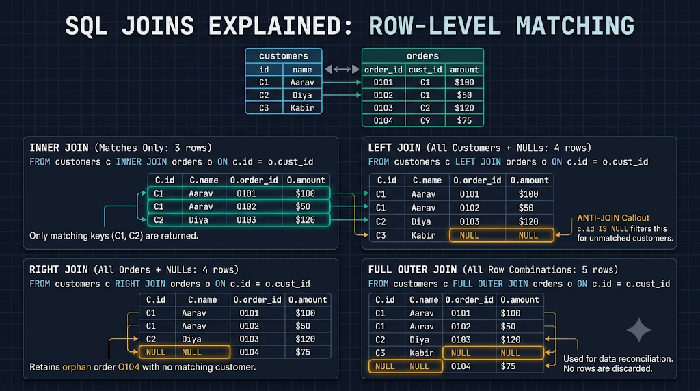
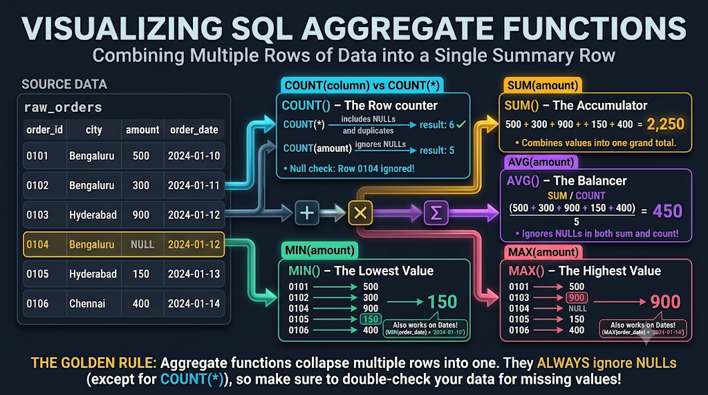
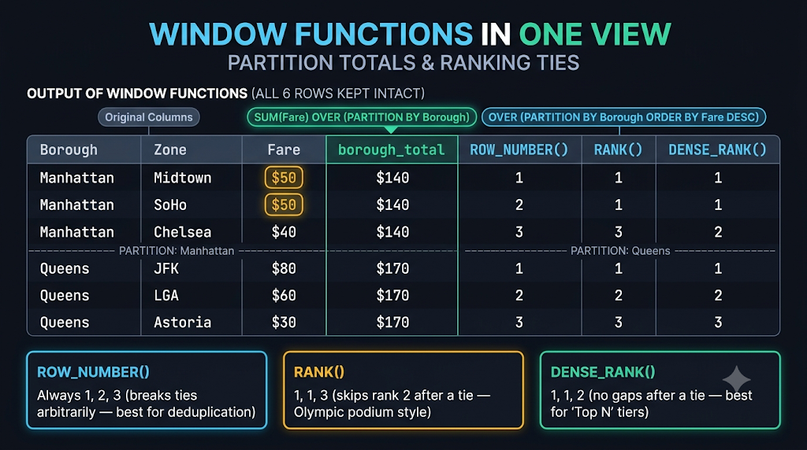
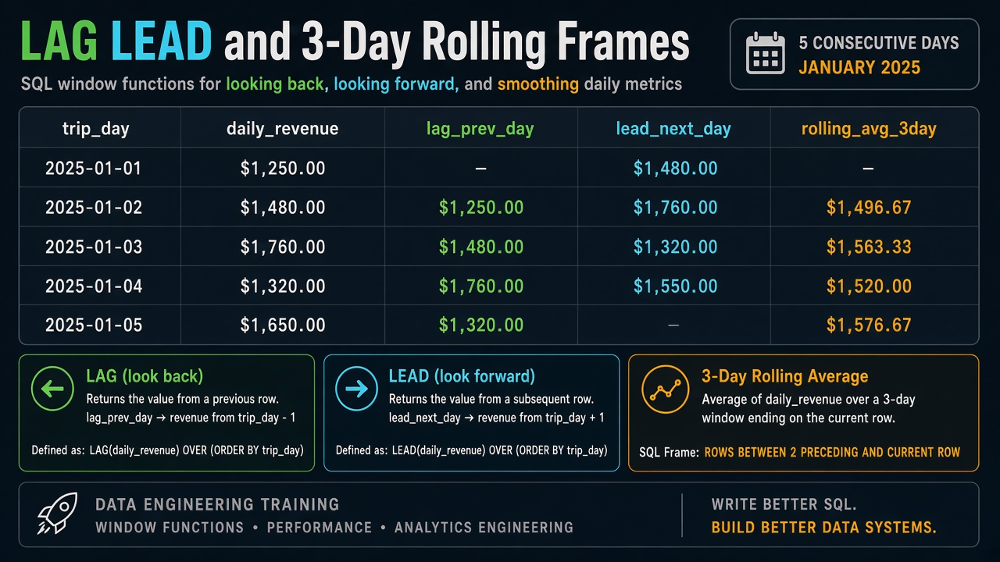

Q1. OVER() partition total
GROUP BY collapses 14 rows into 2 rows; OVER (PARTITION BY dept) keeps all 14 rows and stamps the department total onto each row.
Week 1 · Day 5 · Concept + Hands-On Lab
Section 2: SQL for Data Engineers (2 of 5)
Rank and compare rows without collapsing them, step through time with LAG/LEAD, and chain logic with modular WITH steps—on tiny day05_* tables you create once in Athena with CREATE TABLE … AS SELECT.
CREATE TABLE then query
Day 4’s execution order still matters: WHERE runs before window functions in SELECT, so you cannot write WHERE ROW_NUMBER() … = 1 in the same query block—filter in an outer CTE instead.
default).DROP TABLE IF EXISTS and CREATE TABLE … AS SELECT for day05_* tables—one statement per run.FROM day05_practice_trips (etc.). The WITH ranked AS block is only for the window—not for loading data.CTAS registers the table in Glue and writes rows to your workgroup S3 path. Labs fail with “table not found” until Step 0 completes.
Step 0a — after DROP TABLE IF EXISTS day05_practice_trips;, run this CTAS:
Review in this order: filters & groups → joins → aggregates. Then today’s labs (join + SUM by day + rank / LAG) will feel familiar.
Full Day 4 deck: Day_04_SQL_Refresher.html
Seven sales_orders rows → WHERE status = 'delivered' keeps five rows → GROUP BY city builds Hyderabad / Bengaluru / Chennai buckets with SUM(amount) and COUNT(*) → HAVING SUM(amount) > 600 AND COUNT(*) >= 2 drops Chennai (too small). Golden rule: WHERE filters raw rows; HAVING filters grouped results—same reason window ranks belong in an outer query.

customers × orders on c.id = o.cust_id.
INNER keeps only matching keys (3 rows).
LEFT keeps every customer; missing orders show NULL (Kabir)—the anti-join pattern is LEFT JOIN … WHERE o.order_id IS NULL.
RIGHT keeps every order including orphans (C9). FULL OUTER keeps both sides’ unmatched rows (reconciliation).

COUNT, SUM, AVG, MIN, MAX)
Six raw_orders rows (one NULL amount on row 0104).
COUNT(*) = 6 (includes nulls) vs COUNT(amount) = 5.
SUM/AVG/MIN/MAX on amount skip that NULL—running totals and rolling averages use the same rule.
MIN/MAX work on dates too (MIN(order_date)).

Bridge to today’s exercises
WHERE rn = 1), not in the same SELECT that defines the window.RANK() on those totals.HAVING after GROUP BY—compute, then filter the result.Foundations: recap visuals; partition totals; ranking with ties; filtering after ROW_NUMBER() in an outer query.
Next layer: PARTITION BY + ORDER BY; LAG / LEAD; ranking daily aggregates.
Advanced: WITH RECURSIVE; gaps & islands patterns; rolling ROWS BETWEEN frames.
GROUP BY vs OVER

LAG, LEAD, rolling frames
ORDER BY defines row order inside the partition; LAG / LEAD shift along that sequence; ROWS BETWEEN sets how many prior (or following) rows enter a rolling aggregate.
Exercises 5–8 on day05_live_sales apply the same ideas per employee and sale date: prior/next day amounts, running totals, and a two-day moving average.
day05_live_sales — 14 rows, 6 columnsRun DROP and CREATE as separate Athena statements. All ten questions query this one table.
Statement 1 — drop if it exists:
Statement 2 — CTAS:
Work through each item on day05_live_sales. Reference solutions with copy-ready SQL are in the section below.
OVER() partition total: Show every sale row along with that department’s total revenue (without collapsing rows).ROW_NUMBER() vs. RANK() vs. DENSE_RANK(): Rank all sales inside each department from highest to lowest amount using all three functions side by side.ROW_NUMBER() (top 1 per group): Find the single highest sale row in each department (break ties arbitrarily).DENSE_RANK() (2nd highest): Find the 2nd highest sale amount in each department without skipping ranks when there is a tie.LAG() (looking backward): For Rahul and Kabir, show each day’s sale alongside their previous day’s sale (yesterday_amount).LEAD() (looking forward): For Rahul and Kabir, show each day’s sale alongside their next day’s sale (tomorrow_amount).UNBOUNDED PRECEDING): For Rahul and Kabir, calculate cumulative running total day by day.1 PRECEDING): For Rahul and Kabir, calculate a 2-day moving average (yesterday + today).GROUP BY → window): Calculate each employee’s total sales across all days, then rank all employees from #1 to #6.WITH RECURSIVE (hierarchy): Build the reporting tree starting from Anita (manager_id IS NULL) down to juniors—print each employee’s hierarchy level (lvl).OVER() partition total GROUP BY collapses 14 rows into 2 rows; OVER (PARTITION BY dept) keeps all 14 rows and stamps the department total onto each row.
ROW_NUMBER() vs. RANK() vs. DENSE_RANK() Tie in Enterprise (500, 500, 300): ROW_NUMBER() → 1, 2, 3; RANK() → 1, 1, 3; DENSE_RANK() → 1, 1, 2.
ROW_NUMBER() (top 1 per department) You cannot write WHERE ROW_NUMBER() … = 1 directly because WHERE executes before window functions. Wrap it in a CTE first.
DENSE_RANK() (2nd highest per department) Returns 500 (Anita & Rahul) for Enterprise and 450 (Kabir) for SMB—never misses the true 2nd-highest value even when #1 is tied.
LAG() (previous day’s sale) LAG looks up/backward 1 row in the partition. Day 1 (2026-01-01) always shows NULL because there is no prior day.
LEAD() (next day’s sale) LEAD looks down/forward 1 row in the partition. The last day (2026-01-03) shows NULL because there is no next day yet.
UNBOUNDED PRECEDING) Accumulates from the first row of each employee (500 → 900 → 1500 for Rahul).
1 PRECEDING) Sliding window of size 2 (yesterday + today): for Rahul, Day 1 = 500.0, Day 2 = 450.0, Day 3 = 500.0.
GROUP BY → window) When ranking aggregated metrics, always GROUP BY in CTE #1 and apply RANK() in the outer query.
WITH RECURSIVE (org chart hierarchy) Anchor finds the root (lvl = 1), recursive join adds direct reports (lvl + 1), and WHERE t.lvl < 5 is Athena’s infinite-loop safety guard.
E · ROW_NUMBER vs RANK vs DENSE_RANK
Two trips both have fare $50; third has $40 in the same city. What are the three ranking functions’ values on the tied rows?
Ordered by fare DESC: ROW_NUMBER → 1,2,3 (arbitrary tie-break). RANK → 1,1,3 (skips 2). DENSE_RANK → 1,1,2 (no gap).
M · Why not WHERE ROW_NUMBER() = 1?
Explain using Day 4’s logical order.
WHERE is evaluated before SELECT window functions, so the rank column does not exist yet. Use a CTE that computes the window in SELECT, then filter in the next CTE with WHERE rn = 1.
H · Consecutive login days (gaps & islands starter)
Table logins(user_id, login_date) — one row per login (duplicate days allowed). Sample rows for user_id = 42:
| user_id | login_date |
|---|---|
| 42 | 2026-01-01 |
| 42 | 2026-01-02 |
| 42 | 2026-01-03 |
| 42 | — (no rows Jan 4–6) |
| 42 | 2026-01-07 |
| 42 | 2026-01-08 |
User 42 was inactive Jan 4–6; the rest are separate login days in order.
Write SQL to list each user’s consecutive login streaks: streak start date, streak end date, and number of days in the streak.
Give each row a streak_id—one shared value for every day in the same uninterrupted run. A common definition is login_date − ROW_NUMBER() OVER (PARTITION BY user_id ORDER BY login_date) (shift the date back one step per rank). Interview notes often call this the gaps-and-islands trick; the column name streak_id matches what you are measuring. For user 42:
| login_date | rn | streak_id |
|---|---|---|
| 2026-01-01 | 1 | 2025-12-31 |
| 2026-01-02 | 2 | 2025-12-31 |
| 2026-01-03 | 3 | 2025-12-31 |
| 2026-01-07 | 4 | 2026-01-03 |
| 2026-01-08 | 5 | 2026-01-03 |
All rows in the Jan 1–3 run share 2025-12-31; Jan 7–8 share 2026-01-03. On back-to-back days, date and row number both increase by 1, so their difference does not change. After a gap, only the date jumps—so you get a new label and a new streak.
Put the label in a CTE, then group:
WITH streak_labeled AS (
SELECT
user_id,
login_date,
login_date - ROW_NUMBER() OVER (
PARTITION BY user_id ORDER BY login_date
) AS streak_id
FROM logins
)
SELECT
user_id,
streak_id,
MIN(login_date) AS streak_start,
MAX(login_date) AS streak_end,
COUNT(*) AS streak_len
FROM streak_labeled
GROUP BY user_id, streak_id
ORDER BY user_id, streak_start;
For user 42: row (42, 2025-12-31, 2026-01-01, 2026-01-03, 3) and (42, 2026-01-03, 2026-01-07, 2026-01-08, 2). To get longest streak per user, rank those groups by streak_len DESC and keep rn = 1 (same outer-filter pattern as exercise 3).
In Athena, express “minus one day per rank” explicitly if needed, e.g. date_add('day', -rn, login_date) — same grouping logic.